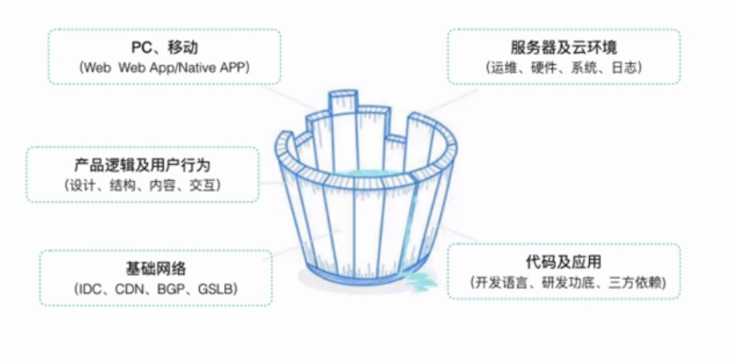

页面架构
一、CSS Reset
1.不需要浏览器的默认样式
2.CSS Reset，清除默认样式，为了减少后续重复代码，全局样式定义
3.全局标签代码绝大部分的表现形式
4.项目初期开发时定制
二、布局解决方案
A.垂直居中与横向居中
1.table-cell+text-align+vertical-align+inline-block
2.position+transform
3.flex
B.多列布局
1.定宽+自适应，不定宽+自适应
- float+margin
- float+overflow：css BFC格式化上下文
- table
- flex
2.等宽
- float
- table
- flex
3.等高
- table
- flex
- float：伪方案
三、模块与组件
A.模块与组件
1.模块化
- 是一系列相关联的结构组成的整体
- 是产品需求的具体实现，具有产品语义
2.组件化
- 是一系列相关联的结构组成的整体
- 是对多模块内通用内容的抽象
- 可以应用到各个产品去，是一个抽象的整体
3.模块化与组件化的优点
- 多人协同
- 扩展、重用
- 可读性好可维护性好
4.规范
- 1）文件规范
- 通用类：base(reset.css….)、lib(juqery….)
- 业务类：业务名称，栏目、页面….
- 2）格式规范
- 定义：单行？标准格式？空格、分号处理、属性顺序（显示->自身->文本属性和其他修饰）
- 注释：块状注释、单行注释（中间空格）
- 3）命名规范
- 分类：模块 .m-nav，组件 .u-button
- 扩展：.m-nav-1，.u-button-1
- 语义：nav？，navigation？，subNav？
移动页面开发
一、移动页面开发
A.页面演进
1.设备演进
2.系统演进
3.网络演进
4.页面演进
- XML->XHTML->XHTML MP->HTML5
- WML=Wireless Markup Language，XML，2.5G，WAP2.0，非W3C
- HTML5
5.和PC页面的差异
- 1）浏览器差异
- 2）页面结构差异：横向式、纵向式
- 3）操作方式差异：鼠标、手势
6.调试
- 1）Chrome DevTools
7.应用场景
- 1）Browser、Webview、Native、小程序……
B.移动端响应式布局
1.响应式布局的方式
- 1）Rsponsive layout
- 2）响应式设计：断点
- 3）自适应设计：流体
- 4）Mobile Side：W:375px，W:750px
- 5）PC Side：W1090
2.响应布局实践
- 1）Viewport
- 2）@media
- 3）Pixel->Rem：Rem基于根节点的font-size进行放大，flexible.js
C.基于App的移动端页面开发
1.App唤醒机制
- 1）沙盒机制
- 2）在IOS9的SDK中，若要通过URL Scheme访问其他APP，则需要事先将该URL加入程序的白名单中
- 3）UniversalLink：通过传统HTTP链接来启动App的技术，可以使用相同的网址打开网站和App
2.Webview详解
- 1）Apple：UIwebview、WKwebview
- WKwebview苹果发布IOS8的时候公布的，与UIwebview相比较，拥有更快的加载速度和性能，更低的内存占用（微信内的）
- 2）Android：webview
- 3）Webpage和Native双向协作:jsBridge、prompt、console.log、addJavascriptInterface
- 4）jsBridge
- Webpage调用->create iframe->Native截获&处理->destroy iframe
- 5）UA重写、Cookies写入、页面状态回调、更大存储容器等
D.移动端页面样式进阶
1.广泛应用HTML5和CSS3
2.设计工具：Photoshop、Skectch+marketch
3.重构流程
- 1）看页面：划分模块、组件
- 2）通过伪类减少标签
- 3）png太大了
4.利用伪类来减少标签，直接使用样式:after、:before
E.移动端性能优化
1.什么是性能优化
- sprite图合并/静态资源打包/……
- 3秒=50%离开：好与不好
- >3秒会影响到SEO
- Web端：首屏时间、白屏时间、可交互时间、完全加载时间等
- 移动端：Crash率、内存使用率、FPS（Frames Per Second，每秒传输帧数）、端到端的响应时间等
- 后端：响应时间（RT）、吞吐量（TPS）、并发数

2.定位性能问题
- 首屏时间=DNS时间+建立连接时间+后端响应时间+网络传输时间+首屏页面渲染时间
- 代码打包策略分布不均匀，请求数量过多
3.性能优化
- 均衡请求值大小：均值
- 冗余代码删除
- 控制合理的请求，数量：单次5个
4.HTTP2.0怎么优化？
F.移动端 坑
1.1px => 0.5px
2.慎用fixed：键盘唤醒后，焦点乱飞；转屏后fixed元素会乱飞
3.闪屏
4.计时器 暂停
5.:active失效
6.页面滚动：overflow要换成-webkit-voerflow-scrolling:touch;
二、移动页面开发实战
A.移动端实战-日常页面
1.评估需求&视觉稿
B.移动端实战-Canvas
1.制定技术方案
三、补充学习资料
单页系统
一、单页应用
A.认识单页应用
1.WebApp

B.架构及实现
1.系统设计
- 系统边界：URL输入，只关心让我调度的URL地址，交互页面
- 输入解析->历史管理->重写校验->过滤器->路由器

2.输入解析
- 输入信息进行格式化
- 解析参数（如REST参数、查询参数等）
3.历史管理
- 管理浏览器的前进后退
- 低版本浏览器（IE8-）额外处理
4.重写校验
- 重写规则校验
- 请求模块重定向
5.过滤器
- 提供使用方扩展处理逻辑
- 可用于业务校验、权限验证等
6.路由器
- 根据输入选择合适的模块展示
7.配置管理中心
- 系统对外可配置的参数管理中心
- 所有组成部分均可从配置管理中心获取 相应的配置
8.系统模式

9.责任链模式

- 1）过程式：非常多的问题，仅仅满足功能性的需求
- 2）责任链接模式
10.系统抽象

11.框架整合
- 1）URL
C.中间件实现
1.浏览器历史
- 1）改变访问地址-HASH段
- 2）IE8-hash的改变不会记录历史
- 3）调用历史接口
- pushState
- replaceState
2.历史管理
- 浏览器有一致表现
- 采用hash记录用户访问历史
3.过滤器

4.路由器

5.模块抽象


二、分层架构
A.分层概述
1.分层结构优势

2.层次过多的问题

3.单页应用

4.分层方式
- 1）纵向分层

- 2）横向分层

B.纵向分层
1.PAC：Presentation-Abstraction-Control（表示-抽象-控制）

2.顶层PAC Agent
- 1）提供系统的核心功能
- 2）Abstraction：提供全局数据模型，操作全局数据模型
- 3）Control
- 允许低层级的Agent使用顶层服务
- 协调PAC Agent的层次
- 保存用户与系统的交互信息
3.底层PAC Agent
- 1）描绘了应用领域的一个具体语义概念
- 2）Presentation：对应于语义概念的一个具体视图
- 3）Absatraction：维护具体Agent的数据，没有其他Agent依赖此数据
- 4）Control
- 维护抽象层与表示层的一致性
- 与较高层Agent通信以交换事件和数据
4.中层PAC Agent
- 1）合成与协作，低层Agent的组合
- 2）Presentation：用户接口
- 3）Abstraction：特殊数据
- 4）Control：具有顶层和底层PAC Agent的Control相同的职责
5.PAC案例


6.PAC优缺点
- 1）优势
- 事务分离
- 支付变化和扩展
- 支持多任务
- 2）缺陷
- 增加了复杂度
- 系统效率
- 可应用性
7.HMVC：Hierarchical Model-View-Controller
8.UMI：Uniform Module Identifier，网易自研，将分层系统扁平化的解决方案
9.UMI原理：模块之间不在依赖

10.UMI分解

- URI中path部分，如/m/m1
- 所以UMI以“/”开始，私有模块UMI以“/?”开始
- 父子关系，如“/m/m1”的父模块是“/m”模块


11.UMI组合


C.横向分层
1.横向分层模式

2.MVC（Model-View-Controller）
- Smalltalk-80

- 初始化

- 用户输入

- Web MVC

- 案例-分布组件

- 优势：模型重用、观察同步视图、动态替换视图和控制器
- 缺陷：过多的更新因素、视图和控制器之间高耦合性、数据访问效率低
3.MVP（Model-View-Presenter）
- IBM Open Class

- Taligent C++/JAVA

- Dolphin Smalltalk


- Passive View

4.MVVM（Model-View-ViewModel）
- ViewModel暴露公共属性和视图状态，用户所有操作逻辑实现
- Microsoft


D.框架介绍
1.MVVM框架核心

2.Angular.JS
- 1）整体架构

- 2）组件


3.React & React-Router
- 1）组件


4.Vue & Vue-Router
- 1）组件


三、数据管理
A.数据概述
1.数据种类

2.基于MVVM模式的数据分层
- 1）构架图

B.数据分层
1.单页应用中的弹窗实现
- 如果弹窗是单例的，也就是系统中这种弹窗只有一种形态，它可以由多处交互触发显示，那在初始化系统时，就生成好放在body中，样式设置为不显示，在点击按扭更改为弹窗的显示样式即可

2.handlebars
C.数据抽象
1.产品阶段

2.领域知识

3.抽象数据模型
- 1）尽量不要用拼音命名
- 2）需要对产品非常精通
D.数据流向
1.Model->ViewModel->View
- 1）系统初始化到系统响应
- 2）ViewModel中不能更改Model中的数据对象，因为缓存会变
- 3）复制一份（不可变数据流）；添加一个uiData对象；添加一个uiCreateTime字段
2.View->ViewModel->Model
- 1）ViewModel接管View数据变化

- 2）虚拟Dom，只比较变化的部分
E.数据存储
1.Model层的数据缓存
- 1）保存数据：就是一个js对象（资源实体Entity）,单一缓存对象，每个资源实体使用单一的文件
- 2）提供操作数据的接口

- 不提供通用的Util方法
- 3）不操作DOM元素
2.单页应用的前端持久化数据
- 1）持久化数据是指保存在用户电脑磁盘上的数据，应用关闭或者电脑重启后数据还存在
- 2）典型场景，用户配置信息、上线后不大变化的数据等
- 3）localStorage（推荐）、Cookie
- 4）如果localStorage不支持，就尽量不要做持久化，毕竟只是锦上添花
- 5）localStorage的使用策略：单一对象
四、性能优化
A.性能优化
1.缓存、减少网络请求、减少传输内容（按需加载、预加载、懒加载）
2.关键渲染路径
- DOM Tree

- DOM+CSS=reccalculate style（计算样式）
- Render Tree：没有<head>、没有<script>


B.执行性能
1.V8 JavaScript Engine

2.优化JavaScript执行效率
- 1）webWorker
- 浏览器后台开房一个新的线程API
- 多线程
- 没有DOM访问权限
- 2）requestAnimationFrame vs setInterval

- jQuery目前的默认animate行为是使用setTimeout！
- 强烈建议使用https://github.com/gnarf/jquery-requestAnimationFrame来做jQuery中timer的替换
- 3）innerhtml vs appendChild
- appendChild在数据量大的时候性能更好
3.JavaScript内存管理
- 1）内存生命周期

- 2）内存回收
- 引用计数：对象有没有其他对象引用到他

- 标记清除：对象是否可以获得（定期从根开始找不可获得的对象）

3）常见内存泄露问题
- 意外的全局变量，使用`use strict`，使用ESLint
- 被遗忘的定时器和回调函数

- 闭包
C.重排重绘
1.样式计算
- 1）减少样式计算量
- 降低选择器的复杂性
- 减少要计算样式的元素数量
- 以上全来一套
- 2）BEM（块、元素、修饰符）
- Block，一个块是设计或布局的一部分，它有具体且唯一的意义，要么是语义上的要么是视觉上的，如：header、container、menu、checkbox、input
- Element，块中的子元素是块的子元素，并且子元素的子元素在bem里也被认为是块的直接子元素，如：menu item、list item、checkbox caption、header title
- Modifier，一个“修饰符”可以理解为一个块的特定状态，标识着它持有一个特定的属性，如：disabled、highlighted、checked、fixed、size、big、color yellow
2.布局
- 1）强制同步布局

- 尽量缓存下来
- 2）合并DOM操作，并在“线下”操作节点
- 使用DocumentFragment来线下操作DOM
- clone节点，并在拷贝节点上进行修改，修改完成后交换节点
- 3）避免单独大批量修改节点样式，可以合并一次操作或者修改节点的class

3.绘制&&图层合成
D.加载优化
1.静态资源加载优化
- 1）压缩

- 2）code-splitting

- 3）gzip
2.图片加载优化
- 1）统计

- 2）图片压缩-webp
- 支持有损压缩和无损压缩的图片文件格式
- webp = PNG *0.74
- webp = JPEG * (0.75~0.66)
- 3）图片压缩-JPEG：75%清晰度
- Baseline JPEG - Loads from top-to-bottom
- Progressive JPEG - Loads from low-quality to high-quality（PS导出Web格式选连续）
- 4）图片按需加载

- 5）图片懒加载
- 使用纯色占位
- 使用渐进式模式从模糊变清晰地显示图片
- 图片加载完成

前端工程化
一、工程规范
A.工程规范概述
1.如果没有任何规范，团队新成员把项目环境运行起来，需要花费两天的时间
2.制定规范的方法
1）参考业界规范
2）民主讨论
3）结果导向
4）不断完善
B.规范范例
1.通用编码规范
1）空白符的使用：
空格；
空行：8%-16%；
缩进：2或者4；
分组
2）多使用括号，比你觉得需要的还要多
3）变量命名：
顾名思义；
长命名，优先考虑（较少用到的变量和全局变量适用）；
短命名，尽量避免（局部变量和循环变量适用短命名）
拼写正确：没有把握的单词事先查词典（IDE会有提示）、不使用拼音
4）注释
概述性和意图性注释：复杂业务逻辑、算法等
避免会增加阅读负担的注释：重复、文不对题、废话
5）开放的心态：乐于接受已经证实的更好规范
2.HTML编码规范
1）基本结构
使用HTML5的doctype来启用标准模式
使用UTF-8编码
title、keywords、description等必需标签
标签和属性都使用小写，属性值使用双引号
2）结构顺序和视觉顺序基本保持一致：按照从上至下、从左到右的视觉顺序
3）结构、表现、行为三者分离，避免内联
CSS在head中引入，JavaScript放在页面末尾
引入CSS和JavaScript时无须指明type属性
不使用内联的CSS或者JavaScript代码
4）保持良好、简洁的树形结构
每一个块级元素都另起一行，第一行都使用Tab缩进并对齐
可以在大的模块之间用空行隔开，使模块更清晰
没有多余的空格，没有多余的换行，没有无用的标签
5）语义化标签：在网页中某种类型的内容必定需要某种特定的HTML标签来承载

3.CSS编码规范
1）对于较大的项目，按照CSS的性质和用途，将CSS文件分成公共型模式、特殊型样式等，并以此顺序引用
2）模块中的所有元素规划，必须限定在该功能模块中，全局样式规划除外
3）不同的规范，样式的命名规则有所不同


4）普遍认可的CSS编码规范
不使用id选择器
类名全部小写，并使用横杠连接符，不使用驼峰
使用css hack的地方要添加注释说明
嵌套层数不宜过多，比如不超过3层
可以使用CSS实现的效果，就不要使用JavaScript
4.JavaScript编码规范
1）使用立即执行函数，以便和其他写的代码进行隔离；时刻注意不要创建全局变量
2）命名风格：
函数、变量、方法：驼峰命名法
构造函数、类、枚举：使用帕斯卡
常量全部大写
3）推荐加分号，不会有坏处
4）对象末尾加逗号，diff工具友好
5）不保持this的引用，可以使用箭头函数或者bind方法
6）对象参数需要详细的注释说明，推荐使用中文写注释、提交记录、文档等资料
7）文件要加上@author信息
8）永远不向函数传递null值，在调用其他方法前，对传入参数加一些逻辑判断
9）删除无用代码，包括未使用的变量、函数等
10）始终保持一致性原则
如果支持es6就用es6
如果使用某个工具库，就全面使用该工具库提供的方法
从某种意义上来说，制定编码规范就是要达到代码风格始终保持一致的目的
C.管理工具
1.HTML代码检查工具
1）bootlint


3）htmlhint
4）html代码是否符合本身规范
2.CSS代码检查工具
1）csslint：https://github.com/csslint/csslint
2）stylelint：https://github.com/stylelint/stylelint


3.JS代码检查工具
1）eslint：eslint —init

2）jshint
3）jslint
二、前后端分离
A.前后端分离概述
1.前后端

2.数据接口

3.规范

B.分离方案
1.单页应用：考虑SEO、专业能力

2.代理转发：考虑多视图能力支持、重新定制模板

3.服务器中间层：考虑基础设施、迁移成本

4.本地模拟容器：考虑模拟容器、模板环境

C.协作方式
1.前后端分离流程


2.前端

3.后台

4.移动端

5.测试

D.案例讲解
1.辅助工具
- 接口管理平台https://nei.netease.com/
- 自动化工具https://github.com/NEYouFan/nei-toolkit
2.基于交互稿产出规范

三、版本管理
A.版本管理
1.版本控制系统
- “人肉”VCS
- LVCS本地
- CVCS集中式
- DVCS分布式
B.分支模型
1.分支和分支模型
- 分支，从目标仓库获得一份项目拷贝，每条拷贝都有和原仓库功能一样的开发线
- 分支模型（branching model）/工作流（workflow），一个围绕项目[开发/部署/测试]等工作流程的分支操作（创建，合并等）规范集合
2.产品级的分支模型

3.环境

C.Git
1.删除所有被跟踪文件：git rm $(git ls-files —deleted)
2.git log —online
3.工作区

4.恢复
- git reset —mixed xxxx，head+分支移动回去，进入暂存区
- git reflog
5.reset和checkout

6.git-stash，保存目前的工作目录栈，收藏到stash区

7.git-rebase，修基，不要在master上会用

四、单元测试
A.单元测试概述
1.最小可测试单元：API、函数
2.开发方法
- 1）TDD，测试驱动开发
- 从实现角度
- 需求分析->编写单元测试->编写代码使单元测试全部通过->重构并重复测试
- 2）BDD，行为驱动开发
- 基于行为，更自然
- 从业务角度定义具体可衡量目标->找到可实现目标的方法->编写单元测试->实现行为->检验产品运行结果是否符合预期
3.意义

4.测试框架

5.断言库

6.mock库

7.test runner：karma、buster.js
8.覆盖率工具：Istanbul
9.好的单元测试
- 可靠性
- 可维护性
- 可读性
10.原则

11.覆盖率
- 行覆盖率：保证每行被覆盖
- 函数覆盖率：保证每个函数都被覆盖
- 分支覆盖率：保证每个分支代码块都被覆盖
- 语句覆盖率：保证每个语句都被覆盖
12.前端测试用例分类
- 数据层
- 逻辑层
- 展示层
- 工具类
B.测试框架
1.框架对比
- 1）jasmine，开箱即用，自带断言、mock等功能；不易扩展
- 2）mocha，灵活可扩展；需要自己配置
2.断言库：chai、should、expect、assert
3.mock库：sinon.js
4.框架造型：mocha+chai+sinon
C.测试实战
1.karma
五、持续集成
A.持续集成概述
1.持续集成CI，每次提交都自动构建、自动测试
2.为什么使用
- 1）易于定位错误
- 2）及早在项目里取得系统级的成果
- 3）改善对进度的控制
- 4）更加充分地测试系统中的各个单元
- 5）能在更短时间里建造整个系统
- 6）便于Code Review
3.流程

4.包含内容
- 1）版本制定工具，git
- 2）灵活的基础设施，如Docker
- 3）自动化的构建和软件发布流程工具，如Jenkins，travis-ci
- 4）全面的自动化测试
- 5）反馈机制
B.集成平台
1.Jenkins
2.Travis-CI
C.集成实战
六、构建发布
A.构建发布概述
1.为什么

2.构建发布

B.构建工具
1.webpack
C.发布工具
前端开发实战
一、项目简介
A.项目准备
1.Html5 Boilerplate

2.Web Starter Kit

3.NEI Toolkit

二、第一阶段
三、第二阶段
1.背景图自适应

2.变量取名
- 1）描述准确
- 2）使用英文
- 3）勤查词典
- 4）遵循规范
- 5）专业书籍
四、第三阶段
1.模板插件：handlebars.js
五、第四阶段
六、项目总结